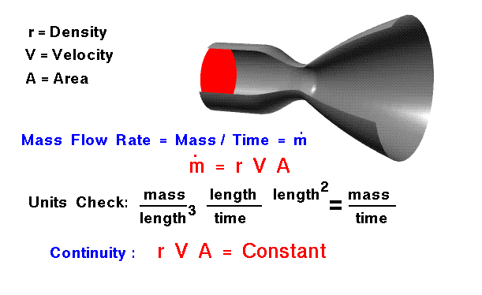
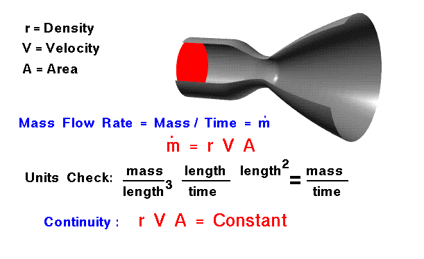

I am Arthur Rowe Jones, usually found online under the name Kurtis Blender.
I am a maker, writer, and mender.
I have built this website to collect and display the things I create.
But I also plan I can use it to make more juxtapositions and connections between my bodies of work, the mediums they're working with, and the subject matters they're exploring.
I hope for it to help assemble different pieces of work into a larger project of sensemaking.
To help form meshes of meanings with wider and deeper roots.
A perpetual work-in-progress, rather than a dusty storage box.
One that is transparent and accessible to others, as a meeting point for dialogues and relationships.
Growing a tree, with leaves & fruits, branches & roots.
Topics may include:
infrastructure,
ecologies,
the climate crisis,
consumerism,
finance,
socialism,
supply chains,
manufacturing,
branding,
craft,
retail,
desire,
function,
objects,
materialism,
cultures,
history,
futures,
care,
design,
repair,
wood,
stories,
content,
media,
internet,
semiotics,
networks,
systems,
assemblage,
growth,
attention,
memory,
time,
work,
play,
sport.
Mediums may include:
writing,
collage,
film,
illustration,
assemblages,
repair,
woodwork,
sewing,
photography,
printmaking,
calligraphy,
sound.
Notes on the name:
The primary explanation for the name ObjectMassFlow.net can be eluded to by three definitions:
Object: a material thing that can be seen and touched.1
Root Mass Flow: the process by which nutrients move to the roots via water.2
Mass Flow Rate: the mass of a substance which passes per unit of time.3
 
